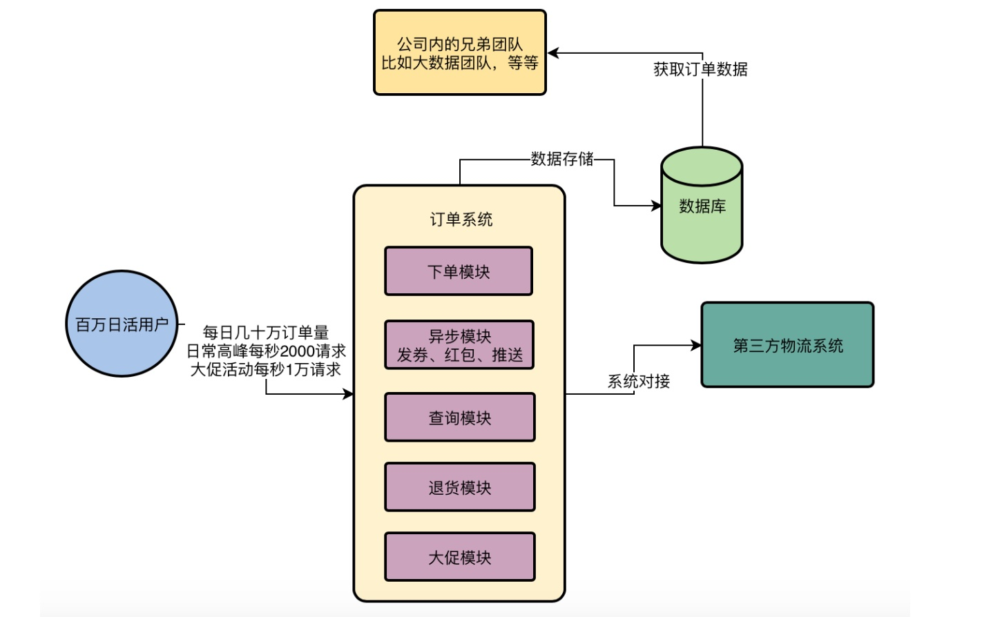
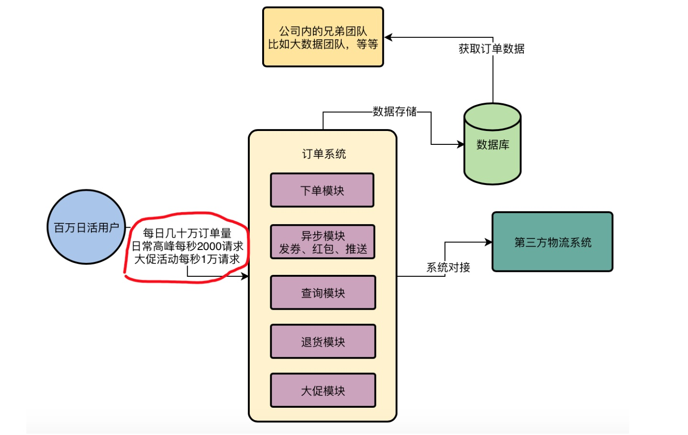
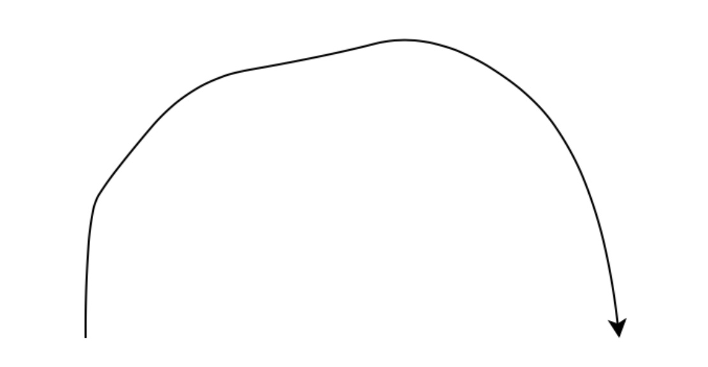
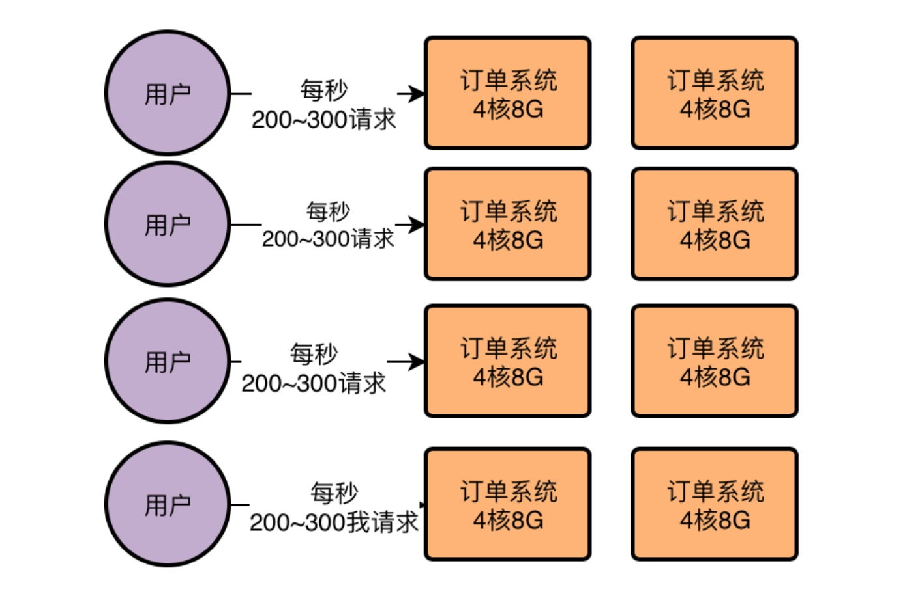
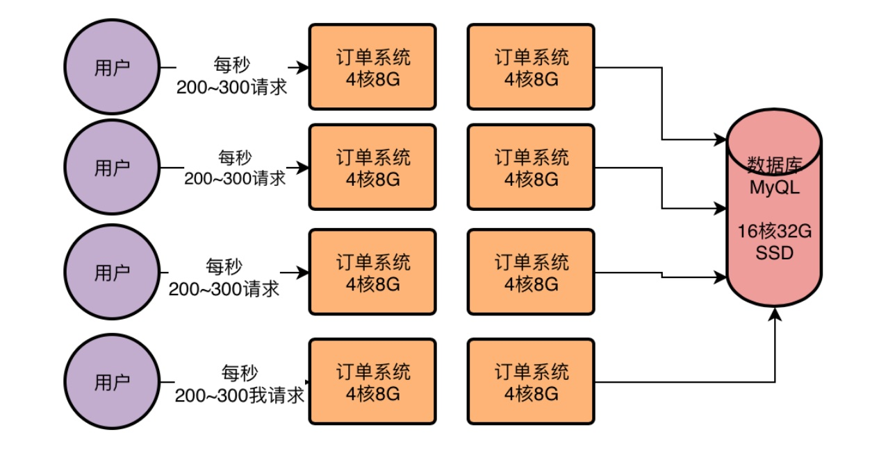
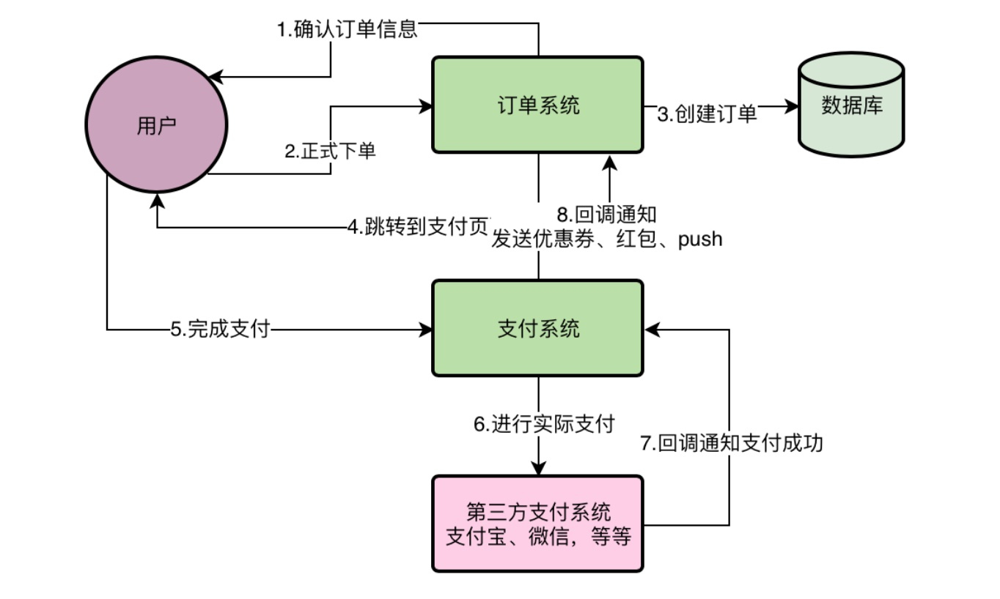
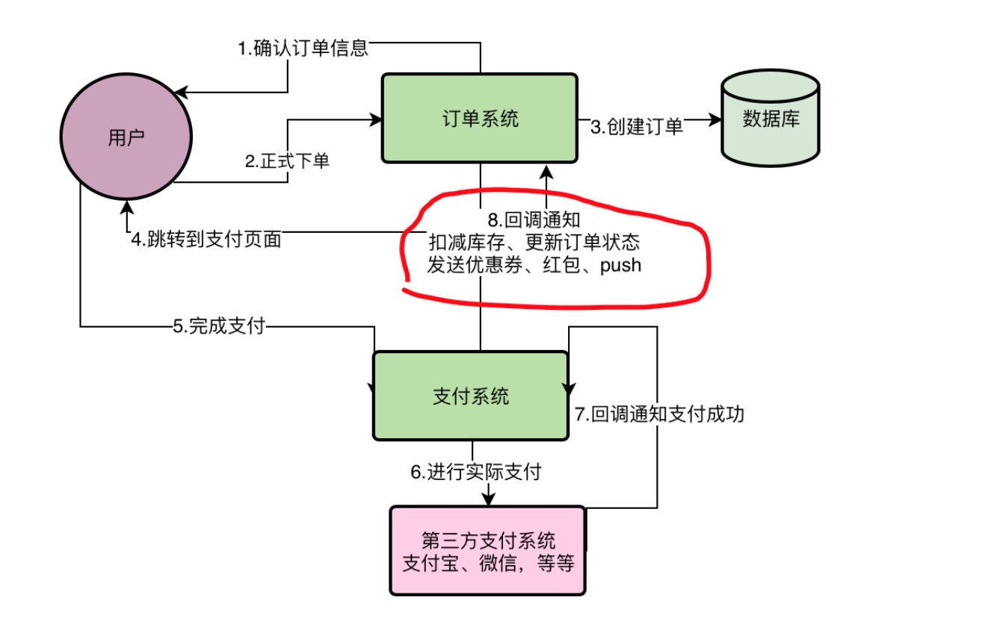

系统面临的现实问题：
下订单同时还要发券、发红包、Push推送，性能太差
正文开始：
1、明哥的突击考验：说说昨天讲的订单系统架构
今天小猛来上班之后，明哥立马就把他叫到了一个小会议室里，打算给他讲讲订单系统当前面临的技术难点，这些技术难点就是订单系统当前最最亟需解决的一些问题
因此到会议室里以后，明哥首先把之前讲过的订单系统整体架构和流程快速的在小白板上重新画了出来。
明哥说：小猛，你看我下面画的这个图，先简单回顾一下，然后你来复述一遍订单系统的整体架构和流程，我看看你忘了没有。

2、一个认真总结做笔记的小猛
小猛看着明哥画出来的这个图，非常有信心的开始复述，心想：我可是昨晚复习和总结了一晚上笔记，把老大昨天说的都给吸收了。
小猛：首先，订单系统必须得有一个下单模块负责让用户进行下订单
其次当订单创建好之后，就必须要跳转到第三方支付的界面上去，让用户尽快支付。如果用户支付成功了，然后就会回调订单系统的接口。
接着订单系统会去做一些事情，比如扣减商品的库存，更新订单的状态，给用户发券、发货红包或者积分，给用户发送Push去推送订单已经支付等待出库的通知。
接着用户就可以从订单系统的查询模块去检索自己的订单，此时可以做一些非核心的业务流程
比较常见的有：选择对商品进行退货、查询订单的物流状态、或者之前没来得及支付现在对订单进行支付，等等。
最后订单系统需要提供一个大促模块，专门去抗双11、双12、618、秒杀活动等特殊大促活动时的瞬时超高并发，这个必须跟正常的下单流程区分开来。
另外还可能有其他兄弟团队要来获取订单系统的数据，比如大数据团队。
而当前咱们的APP大致是千万注册用户，百万日活，每日几十万订单量，每天高峰期访问每秒两三千的QPS，大致整体负载压力是这样。
现在系统架构比较简单，主要是一套订单系统部署了多台机器，做了一个集群，然后底层就连一台数据库。
现在的问题就是，随着用户量越来越大，数据量会越来越大，高峰期并发量也会越来越高，系统的压力越来越大，光靠这个架构抗是很困难的，亟需对订单系统整体进行架构的升级和改造。
小猛行云流水般说完了订单系统的整体架构和核心的业务流程，还有当前面临的负载压力以及技术上的挑战，可见这孩子真是对项目下了功夫，用了心了。
明哥听了连连点头，非常满意，这小伙子是个好苗子，自己得好好带，尽快培养成骨干工程师。
3、小猛的疑惑：系统压力越来越大到底指的是什么意思？
但是虽然小猛快速解释清楚了明哥昨天灌输给他的这一套项目背景之后，小猛自己却有一个很大的疑惑，他有点不理解一个事情。
小猛问：明哥，你昨天最后老是不停的强调，我们的系统压力越来越大，但是我始终没搞明白，系统压力大到底是大在哪儿？这是什么意思啊？我昨晚想了半天也没搞明白。
明哥说：放心，这个系统压力大的概念，对很多初入职场的小伙子，或者是很多工作多年但是一直在做那种几十个人、几百个人用的内部系统的工程师，都是一个疑惑
因为没亲身经历过一些压力大的系统，是很难真正透彻的理解这个东西的。
于是明哥打算先给小猛从整体上解释一下这个问题。
明哥：昨天我们已经说过了，这个系统每天高峰期大概会有2000左右的QPS，也就是每秒会有2000左右的请求过来，这就是当前系统的一个最大压力。
在非高峰的时候，其实远远达不到这么高的并发，所以先考虑高峰期的压力就可以了。
说着，明哥在下面的图里画了一个红圈，“我们先讲讲这里的事儿，你得先搞明白系统的压力是从哪儿来的？”

4、明哥原来是个老司机：从早上的一个煎饼说起
现在经过统计，我们这个电商APP大概是每天百万的用户在使用，但是你要知道一点，用户对任何一个APP的使用时间，都是根据APP的类型不同而有区别的。
比如你要用一个电商APP，那么本质是一种很放松的购物，可能是有什么东西需要买，立马掏出手机来买，也可能是没事儿干，跟逛街一样，就想逛一逛APP。
那么你作为一个正常的人思考一下，平时早上你刚起床，匆匆忙忙洗脸刷牙，然后出门在路上买个煎饼吃早饭，这个过程中你会逛一个电商APP吗？
恐怕不会！
接下来呢，你会健步如飞的去赶地铁，或者坐公交车，在这个过程中人挤人，你觉得你会玩儿电商APP吗？
恐怕也不会！
接着到了公司之后，就开始了一天的工作，在工作过程中如果你逛电商APP，那你可能是不打算继续干了。
所以为了保住你的饭碗，这个时候还是别逛了。
然后好不容易干到中午，大家吃完午饭开始午休，有的人刷抖音，有的人玩王者荣耀，你也许会打开手机逛一逛电商APP，这是有一定概率的。
但是如果你是一个合格的职场员工，上午干的很累，下午还有工作压力，中午也不敢放松太多，中午应该不会逛太多的时间。
下午继续工作，最后好不容易下班了，接着坐地铁或班车回家的时候，这个过程中往往是每个职场人一天最轻松的时刻
包括到家了以后，睡觉前，每个人都会适当放松一会儿，无论是玩游戏，还是逛电商APP，适当买点自己喜欢的东西给自己减减压。
明哥说到这里停顿了一下，问：小明，你觉得我说的这些是跟技术无关的东西吗？
小猛停顿了一下，说：明哥，一开始我很疑惑你为什么扯这么远，不过突然发现你说的这些好像对一个系统的工程师来说，确实是第一件应该了解的事情，也就是你的APP用户的生活习惯和APP的使用习惯。
这些用户的使用习惯直接决定了他们使用我们APP的频率、时间段和时长，一般每隔几天用一次我们的APP？每次使用一般在什么时间段？每次使用多长时间？
这些东西都要通过对用户的分析得出来。
明哥很满意的点点头：不错，你的反应真的很快，当时校招就觉得你比一般学生反应快很多，思维更加敏捷。一个工程师不能光是埋头于技术，视野要打开一些，思维要更加多元化，当时果然没选错你！
5、根据线上统计数据推算出系统的负载
喝了口水，明哥继续道：既然搞明白了用户的生活习惯，我们就可以结合线上的一些统计数据来推算一下系统的工作负载了。
通过线上一些数据的统计，我们大致知道，咱们这个APP，基本上80%的用户都习惯于在晚上六点过后到凌晨十一点这几个小时使用，这个刚好是大家下班的时间，便于大家购物。
所以在这几个小时内，可以认为有80万左右的用户会使用APP。
然后由于我们是一个电商的APP，需要用户大量的浏览商品，搜索商品，然后才会下订单和支付订单，所以用户一般会对APP的界面执行几十次到上百次的点击。
但是大部分点击都是跟一些商品系统、评论系统进行的交互，用户主要是查看商品，查看一些评价，还不是针对订单系统的。
因此对我们订单系统而言，主要的访问量就是下订单以及对订单的检索、查询，少量的退款等操作。
我们现在每天大概是三五十万个订单，也就对应了百万次下单操作和一些订单查询等操作
看着百万次针对订单系统的请求似乎很多，但是如果均摊到5个小时中呢？每秒钟大概只有几十次请求而已！
但是如果你要这么计算，那就大错特错了
因为我们的电商APP有两个特点，第一，真实的系统访问负载应该是一个半圆形的曲线，类似下面这样：

比如从晚上6点开始访问量开始增加，一直到可能晚上八九点到一个顶点，访问是最大的，然后慢慢的开始下落，到晚上十一点就变得较低。
所以在看系统的访问压力的时候，是不能直接按平均值来计算的。
另外，这个电商APP有一个特点，每天都有一些限时限量售卖的特价商品，就是每天会有一批特价商品是限量的，而且限制在晚上某个时间点售卖
因此往往在这段时间里，会有很多用户在等着到了那个时间就一下子点击购买下单，此时订单系统的压力往往是最大的。
综合下来而言，根据线上系统的接口统计数据来看，晚上购物最活跃的时候，订单系统下单最顶点的高峰时段每秒会有超过2000的请求，这就是订单系统的最高负载。其他时候都比这个负载会低不少。
6、明哥终极解惑：为什么系统的压力会越来越大？
听到这里，小猛还是没有明白，那么为什么系统的压力会越来越大？
小猛说：我现在完全可以理解我们订单系统的高峰期的负载是怎么来的了，但是系统的压力到底是指的是什么？
小猛对明哥再次提出了疑问。
明哥说：别着急，因为你对互联网类的系统肯定有很多地方都不熟悉，对互联网系统的思考和一些类似OA、CRM之类的传统软件系统是完全不一样的，要习惯互联网系统的分析方式。
明哥继续道：你看，现在线上的订单系统一共部署了8台机器，每台机器的配置是4核8G，这是互联网公司的标准配置，当然也有不少系统是用2核4G的机器部署的，那也是标准配置。
因此高峰期每台机器的请求大概是每秒200~300之间。
明哥一边说着，一边画出了下面的图。

但是这8台订单系统部署的服务器都是连接一台数据库服务器的，数据库服务器的配置是16核32G，而且是SSD固态硬盘的，用的是比较高配置比较贵的机器，因此性能会更好一些。
这也是比较常规的数据库服务器的配置，但是一般也会用比如8核16G和机械硬盘等机器部署数据库。
说着，明哥又在下面的图中补充了一个数据库服务器进去。

现在线上这样的一个机器部署情况，在高峰期每秒2000以上请求的情况下是很轻松可以抗住的
因为4核8G的机器一般每秒钟抗几百请求都没问题，现在才每秒两三百请求，CPU资源使用率都不超过50%。
可以说8台4核8G的机器，每台机器每秒高峰期两三百请求是很轻松的。
然后数据库服务器因为用的是16核32G的配置，因此之前压测的时候知道他即使每秒上万请求也能做到，只不过那个已经是他的极限了，会导致数据库服务器的CPU、磁盘、网络、IO、内存的使用率几乎达到极限。
但是一般来说在每秒四五千的请求的话，这样的数据库服务器是没什么问题的，何况经过线上监控统计，现在数据库服务器在高峰期的每秒请求量也就是三四千的样子，因此基本上还没什么大问题。
所以明哥说到这里，顿了一顿，看着小猛说：要明白什么是系统压力，就得明白你的系统线上部署的机器情况和使用的数据库的机器情况
而且作为一个合格的互联网行业的Java工程师，要对各种机器配置大致能抗下的并发量有一个基本的了解。
小猛听到这里，简直是目瞪口呆，跟这种线上系统有真实负载和压力的情况想比，自己上大学的时候在实验室里做的那种Demo小项目，简直完全不是一个概念。
仿佛在他面前打开了一个新世界，真是太有意思了！
7、如果系统压力越来越大会怎么样？
这个时候小猛开始有点找到门道了，他问明哥：那么如果咱们的用户量越来越大，并发量越来越大，数据量越来越大，这个系统会有什么问题？
明哥笑笑说：那这里的问题就真的很多了，一旦系统压力越来越大，无论是并发量还是数据量，你会发现你的系统各个地方都要优化，都有问题，这不是一个人可以解决的，也不是一两天就可以解决的。
一个高并发、大数据量的系统架构迭代、演进和优化，需要一个精干的技术团队经年累月的不停的去做，期间要涉及到大量的技术方案、架构重构。
但是今天最后的最重要的一个主题，就是先给你讲一个现在系统最明显的一个技术问题，也是影响用户体验的一个问题。
现在我重新画出来我们的订单系统的一个业务流程图，你看下面。

我们都知道，在用户下订单之后一般就是要支付，在支付成功之后我们要干很多的事情
在上面那个图的第8个步骤里，其实我们除了发优惠券、发红包、发送Push通知给用户之外，还要做很多其他的事情。
比如：对于一个电商APP而言，你卖掉了一个商品，就要扣减掉商品的库存，而且一旦用户成功支付了，你还得更新订单的状态变成待发货。
也就是说，在上图第8个步骤里，其实是有很多事情要做的，明哥说着在上图里的步骤8的地方补充进去了几个子步骤，看下图红圈中的部分：

现在根据我们线上系统的统计，这个步骤8那里的多个子步骤全部执行完毕，加起来大概需要1秒~2秒的时间
有时候在高峰期负载压力很高的时候，如果数据库的负载较高，会导致数据库服务器的磁盘、IO、CPU的负载都很高，会导致数据库上执行的SQL语句性能有所下降。
因此在高峰期的时候，有的时候甚至需要几秒钟的时间完成上述几个步骤。
那么他的影响是什么呢？
想象一下，如果你是一个用户，结果你在支付完一个订单之后，界面上会有一个圈圈不停的旋转，让你等待好几秒之后才能提示支付成功。
对用户来说，几秒钟的时间，会让人非常不耐烦的！
所以，首先针对步骤8里的子步骤过多，速度过慢，让用户支付之后等待时间过长的问题，就是订单系统第一个亟需解决的问题！
小猛听完明哥的分析之后，呆了一会儿。显然刚刚毕业第一次接触互联网类的系统，需要一点时间给他去消化。
过了一会儿，他跟明哥说：明哥，今天的信息量真的很大，我今晚回去再好好捋捋，好好做一下总结和笔记。
明哥笑笑：好好加油，利用好你现在单身的优势，技术上迅速成长起来。你明哥是过来人，等你谈恋爱、结婚、有了小孩，就。。。